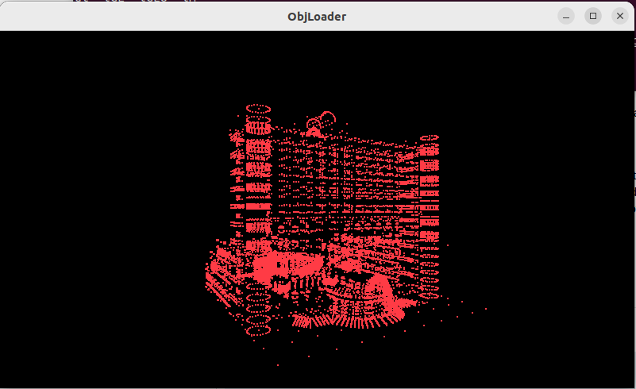
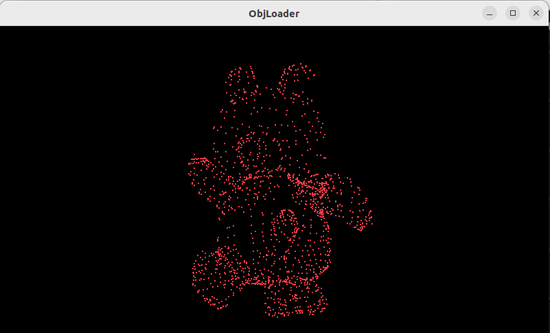
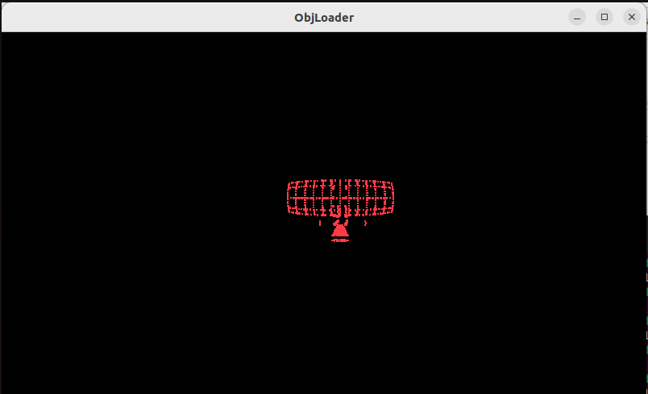
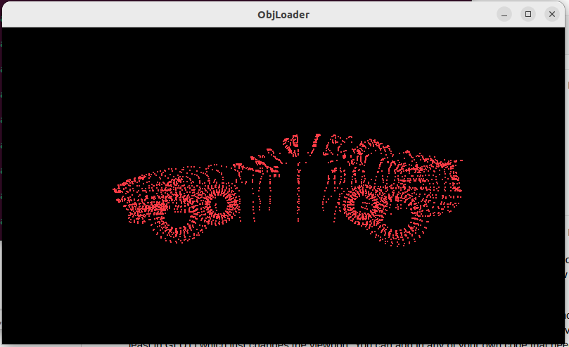

O Laboratório visa executar os projetos, e verificar os conceitos sobre: modelamento.
Laboratório 4 - Leitura de Objeto
Atualizado em 27/10/2022 ás 18:55
Introdução à Estrutura de OpenGL
Códigos no laboratório
Foi realizado o dowload e execução dos arquivos de código e de dados para leitura de arquivo de pontos de 5 objetos.
Resultados dos Exercícios para Entregar
Figura 1 - Pontos do obejto mba1.
Figura 2 - Pontos do obejto Teddy.
Figura 3 - Pontos do obejto Radar.
Figura 4 - Pontos do obejto Porshe.

Figura 4 - Pontos do obejto Elephant.
Analise e conclusão:
- Utilizando os conceitos aprendidos na disciplina foi possivel aprofundar os fundamentos de modelamento de objetos 3D e de transformações (translação, rotação, e escalonamento), aspectos de programação de animação utilizando a linguagem C++ e a biblioteca OpenGL.